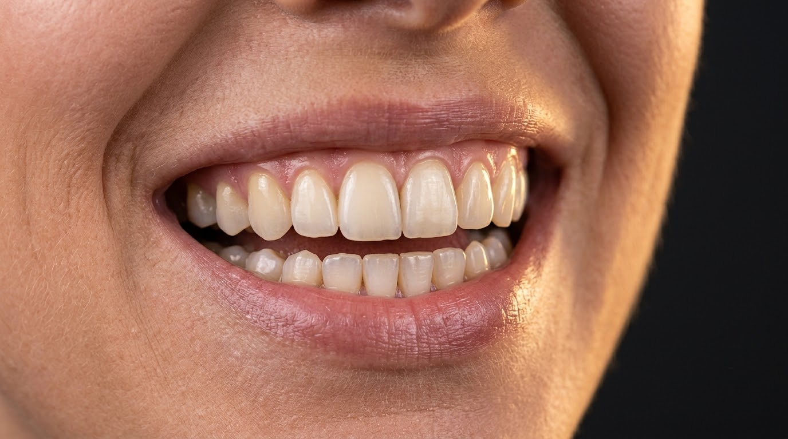

Escaneamento Intraoral & Fotografia de Estúdio
Mapeamento óptico tridimensional das arcadas sem moldagens convencionais, integrado à análise dinâmica do sorriso e do suporte labial.
Reabilitação estética minimamente invasiva com lâminas cerâmicas de 0,2 mm a 0,4 mm desenhadas digitalmente para reproduzir a textura e a translucidez do dente natural.

Cada fase é validada em ambiente 3D e testada fisicamente antes da confecção definitiva em laboratório.
Mapeamento óptico tridimensional das arcadas sem moldagens convencionais, integrado à análise dinâmica do sorriso e do suporte labial.
Aplicação provisória em resina sobre os dentes naturais para que você visualize e aprove proporção, comprimento e fonética antes de qualquer preparo.
Preservação máxima de esmalte sadio e confecção artesanal em dissilicato de lítio com gradação natural de cor entre cervical e borda incisal.
Protocolo adesivo sob isolamento absoluto e checagem precisa dos contatos mastigatórios para longevidade funcional.